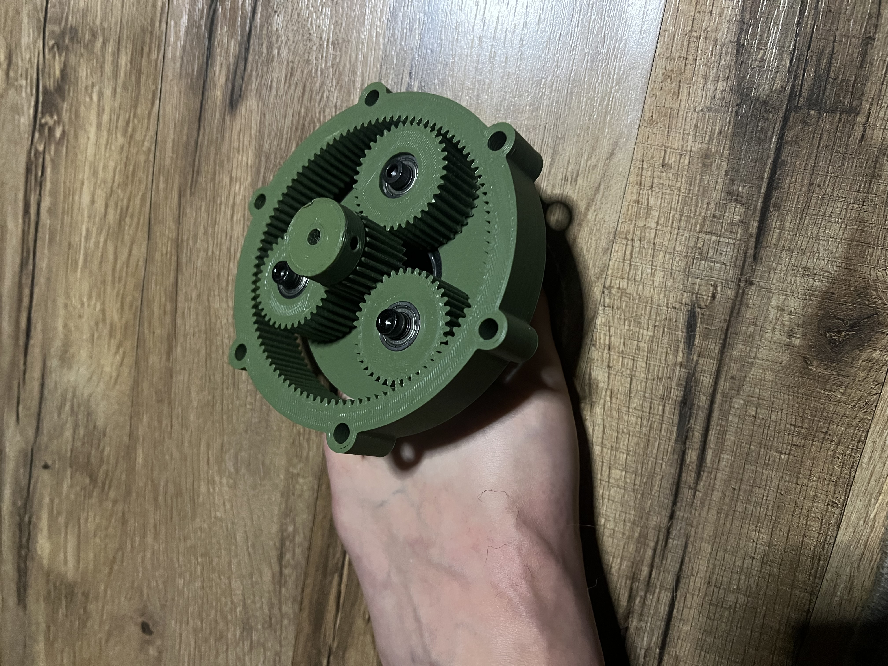
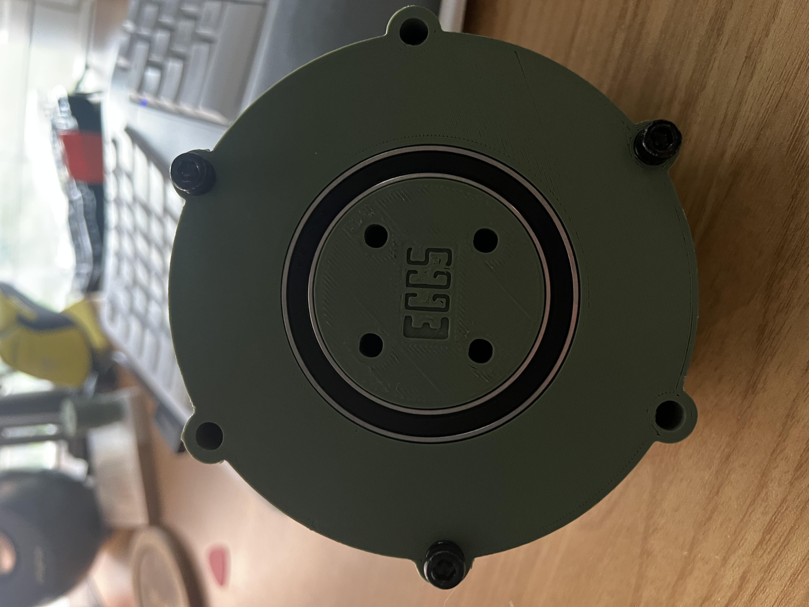

Please Excuse me - having some web hosting plan issues - in process of updating said hosting
Thanks -Jake
Planetary Gear Box


Iteration
I learned so much in the proces of making this. It was fun, exciting, and somewhat challenging.
Step One
I had to learn CAD I had zero experience. I had used tinkercad a bit but it's only rudimentary tools, and
to create anything robust you had to get creative and it took a lot of time.
So I decided to jump in and learn Fusion 360. I was able to get a huge discount and there is tons of
content for anyone curious about the process. Some of it can
be really intuitive but other things don't make much sense until you've built thru the process multiple
times. I found an amazing teacher on Youtube, his name is @Antalz. He jumps straight
in and start modeling, then he takes his time and explains the math behind it. The gear sets are some
algebra and trig, but there are scripts to create the module of gears you are looking for.
I learned a lot about the dimensions of planetary gear sets, how to calculate the center distance needed
by using the pitch dimeters of different gears. Can't thank that channel enough.
Step Two
This is where I began modeling. As you will see in the photos above I took my time. There were about 3
prints with the white PLA using my creality printer. First I tried to simple use some cylinders to hold
the bearings
to make sure that I was within spec. I needed them to print precisely where they were calculated to be
otherwise the gears would not mesh well, nor fit inside the ring gear.
This wasn't too bad but the biggest problem in the first iteration was the printing learning curve. Say
you print a module 1 gear with a backlash of .15mm. Then you print the same module gear with .2mm
backlash. Well
a lot of the time they would come out almost the exact same and this wouldn't account for the
tolerances. So I to make drastic changes either too much or too little until I found the sweet spot my
printer could produce.
I could have easily used a larger module for the gears but I wanted this to be somewhat precise without
as much backlash. This took the longest, besides the printing which is basically a passive activity.
Step Three
After I had a gear set I had tested I decided to bring out the more expensive material for printing.
Which is Sunlu PLA+. It's not amazing but it is a little strong, prints a little hotter, and can hold in
the brass inserts a little better than the
standard PLA. After I had that, it was time to design the housing, carrier plate, and decide which
hardware and components to order. I did this retroactively in a sense, I found what dimension bearings
were on amazon, then designed around those constraints.
I could have used McMaster-Carr but they are extremely expensive and sometimes it's the same bearing for
a fraction of the cost. I bought some brass inserts so I wouldn't need more space for nuts on both sides
of each component, and a variety pack of m4 bolts and washers.
It really is amazing what can get to your home in a couple of days, we have incredible access to so much
it really is inspiring.
Step Four
The last step was creating the housing. This was the easiest part as I knew my constraints and I knew the
dimensions of the output bearing. It's a very simple design right now. The middle section which is the
ring gear holds the brass inserts
this allows the input housing and output housing the simply bolt on from either side. I have also
attached some renders of the project in the carousel.
I am planning on redesigning with similar inputs and outputs but I want to make it as small as I can and
still get a ~5:1 reduction. The stepper motors I have are extremely weak so I plan on ordering some that
can lift a little more.
Once that is done I want to create a fairly large robotic arm and begin to program it, attach a camera
with computer vision so I can really learn more about the space. This has been a really fun hobby and
I'm even considering an embedded engineer
career path. If you have any questions feel free to reach out. Thanks!
press spacebar to jump
Score: 0
High Score: 0
Robotic Arm Project
This project showcases a robotic arm controlled by a microcontroller.
It was fun to 3d print something more functional. I had some extra parts laying
around and was able to secure it to a suction cup base which allowed it to go onto a
guitar.
Each Axis is controlled by a potentiometer. It's a 3.3v esp32 board which isn't showcased
because it's incredibly messy and doesn't reflect well haha.
If I were more serious about a guitar playing robot I would have to put more time into
the 'pick' so it wouldn't get hung up. Also believe a limit on the z axis would help it remain more
stable. If you only have a few mm clearance you could add a differential gear which would speed up
the raising and lowering action. Then from there you'd probably reduce at least of of the shoulders
and have a much more stable base. This current base is just a friction fit which isn't ideal for speed.
Either was I had a lot of fun and it got the gears moving.
.NET C# Banking App || Final Project
Giant National Bank - This was my final project for C# II.
In this course we learned a lot about the workings of a large codebase that was meant to replicate
working inside of a moderately sized professional environment. We learned about different architectures
for organizing the workflow.
In this project I used Model-View-Controller architecture on both the client and api side.
There is only one commit because for this semester we were using Azure cloud source control. Which was a
bit of a drag because my git is missing those commits for my activity!